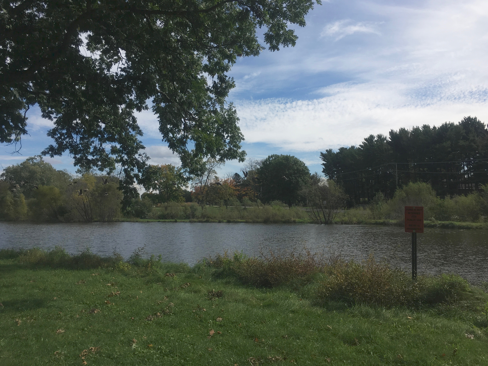
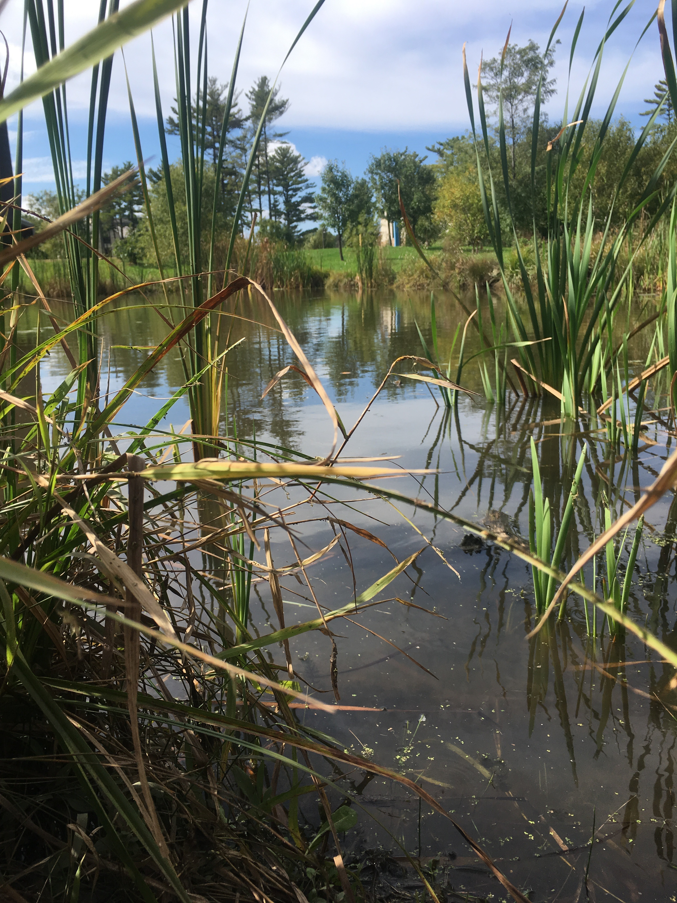
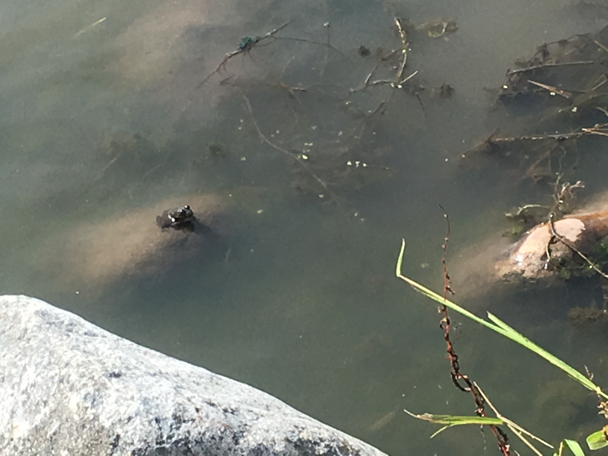

Welcome to the Rock Valley College water ecosystem page! This page was made to highlight the many aspects of how the creek and lake on campus impact wildife and the overall ecosystem of the surrounding area.
Many types of animals rely on the creek for almost every aspect of their lives. Swans, geese, frogs, and turtles are just a few of these animals. Smaller creatures like flies, mosquitos, and varioues other insects live and breed in and around the water. There are also thousands of microorganisms that live in the creek, too small for the eye to see, and staggering amounts of plant life which inhabit the water.
The creek has more of an impact on the surrounding area than one would initially think. The current carries many minerals and nutrients with it as it travels, dropping and piking up as it goes. It is also a free ride for aquatic insects and microscopic creatures that eventually end up in the river.
The creek that runs through the college campus is Spring Creek. It starts by Sportscore Two, which is northwest of RVC several miles, and ends its course by running into the Rock River near Anderson Japanese Gardens. Throughout its many twists and turns, the creek runs about 16 miles from beginning to end.
The Lake
The lake at Rock Valley College is separated from the creek that runs through the campus. Located at the southwest corner on the college, the lake is about 600 feet wide and about 125 feet across.
Though it is close to but separated from the creek, the lake, in association with the creek, provides a unique habitat for some animals. The marshy area of the creek, which is located on the southeast edge of the campus, is a prime habitat for birds such as herons and cranes.
Large numbers of geese inhabit the area around the lake. The open field of grass makes it a prime place to keep watch for predators, as well as a long runway to take off for flight. Whenever the swans are not swimming in the lake, geese can almost always be found there either bathing, eating, raising offspring, or just ejoying a swim.
The Pond

The pond is located just north of the Jacobs Center for Science and Math. Though it is small, only about 125 feet across and 25 feet wide, it is home to several species of turtles and frogs. It is a favorite place for the sanws that live at RCV. The reeds and other various aquatic plants provide cover and protection for small animals and rodents.
The reeds and other aquatic plants that grow in and aroudn the pond are vital dietary parts of water fowl, such as the swans, geese, and ducks on campus. These birds, especially the swans and geese, use their long necks to reach under the surface of the water to retrieve plants that grow on the bottom on the pond. Because these plants are rich in fiber but low in energy, the swans and geese have to constantly eat.
Whenever the sun is out, one can always find amphibians basking in the sun on rocks in the pond. But they are very skiddish and will dart into the water before you can even get a good look at them. Larger animals, such as hawks, turkeys, and coyotes have even been seen around the pond on occasion.
Table Information
The following table shows the different types of animals/organisms that live in each body of water on campus.
| Animal | Body of Water |
|---|---|
| Swans | Lake, pond, and creek |
| Geese | Lake, pond, and creek |
| Ducks | Lake, and creek |
| Turtles | Pond |
| Frogs | Pond, creek |
| Fish | Creek |
Image Gallery
The following photos were taken by an RVC student at various places on the campus.
{kind=link}
{kind=link}
{kind=link}
{kind=link}
{kind=link}
{kind=link}
{kind=link}
{kind=link}